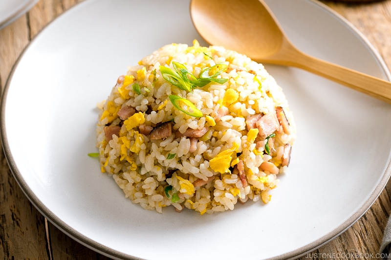

Fried Rice

Oriental Fried Rice
Fried Rice is a quick and easy dish to make using leftovers from your fridge and can easily be meal-prepped to fit a dynamic and fast-paced lifestyle
Ingredients
- 2 Cups Rice
- 1/2 cup any protein
- 1 Large Egg
- 2 Tbsp high smoke point oil (Canola or Vegetable)
- 2 Tbsp Soy Sauce
- 1 Tbsp Sesame oil
- 1 cup frozen Vegetable (carrots, corn, peas)